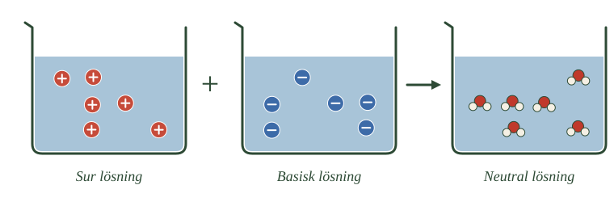
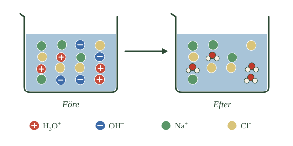

- En sur lösning har vätejoner, en basisk har hydroxidjoner
- De två reagerar med varandra och bildar vatten
- Det kallas neutralisation
- Båda lösningarnas egenskaper försvinner
- Blir det joner över är lösningen fortfarande sur eller basisk
Du vet vad en syra gör och vad en bas gör. Nu ska vi se vad som händer när de möts.
Två sorters joner
En sur lösning innehåller vätejoner. Det är de som gör den sur.
En basisk lösning innehåller hydroxidjoner. Det är de som gör den basisk.
Blandar du de två lösningarna finns plötsligt båda sorterna i samma kärl. Och de kan reagera med varandra.
Vad som bildas
En vätejon och en hydroxidjon går ihop och bildar en vattenmolekyl.
- Räkna partiklarna i det första och det andra glaset
- Vad som finns i det tredje glaset som inte fanns i de två första
- Om det finns några joner kvar i det tredje glaset

Tänk efter vad det betyder. Vätejonen var det som gjorde lösningen sur. Hydroxidjonen var det som gjorde den basisk. Nu är båda borta — de har blivit vatten.
Reaktionen kallas neutralisation.
Inte magi
Det är lätt att tänka att syra och bas "tar ut varandra" på något oförklarligt sätt, som om deras egenskaper bara försvann.
Så är det inte. Det sker en verklig kemisk reaktion mellan bestämda partiklar. Vätejoner och hydroxidjoner förbrukas, och nya vattenmolekyler bildas. Det är lika konkret som när natrium och klor bildar koksalt.
När det inte går jämnt ut
Blandar du precis lagom mycket av varje tar jonerna ut varandra helt, och lösningen blir neutral med pH nära 7.
Men det händer bara om mängderna stämmer.
Finns det vätejoner kvar när alla hydroxidjoner är förbrukade är lösningen fortfarande sur — bara mindre sur än förut.
Finns det hydroxidjoner kvar är lösningen fortfarande basisk.
Hur man vet vad som är lagom handlar underdel C om.
- \(\ce{H3O+ + OH- -> 2 H2O}\)
- Oxoniumjonen lämnar över en vätejon till hydroxidjonen
- Det är en verklig kemisk reaktion, inte att motsatser tar ut varandra
- Med rätt mängder blir lösningen neutral, pH nära 7
- Överskott av någondera gör lösningen sur eller basisk
En sur lösning innehåller ett överskott av oxoniumjoner, \(\ce{H3O+}\), medan en basisk lösning innehåller ett överskott av hydroxidjoner, \(\ce{OH-}\). När en sur och en basisk lösning blandas kan dessa joner reagera med varandra.
Reaktionen kan skrivas:
Oxoniumjonen lämnar alltså över en vätejon till hydroxidjonen. Resultatet blir två vattenmolekyler. De joner som gjorde lösningen sur respektive basisk har därmed reagerat och omvandlats till vatten.
Detta kallas neutralisation.
Det är viktigt att förstå att neutralisation inte betyder att syra och bas bara "tar ut varandra" på något oförklarligt sätt. Det sker en verklig kemisk reaktion där bestämda partiklar reagerar med varandra. Oxoniumjoner och hydroxidjoner förbrukas och nya vattenmolekyler bildas.
Om rätt mängd syra och bas blandas kan lösningen bli neutral, alltså få ett pH nära 7. Om det däremot finns oxoniumjoner kvar efter reaktionen är lösningen fortfarande sur. Finns hydroxidjoner kvar är den fortfarande basisk.
Enklare skrivsätt
Man kan förenklat tänka att en vätejon, \(\ce{H+}\), från syran reagerar med en hydroxidjon, \(\ce{OH-}\), från basen:
En vätejon och en hydroxidjon går alltså ihop och bildar vatten. Det är grunden för all neutralisation.
Neutralisation är protonöverföring
Standardtexten säger att oxoniumjonen lämnar över en vätejon till hydroxidjonen. Läser du den meningen med glasögonen från syrornas fördjupning ser du vad som faktiskt sker.
En proton byter ägare. Oxoniumjonen avger den och fungerar som syra. Hydroxidjonen tar emot den och fungerar som bas.
Neutralisation är alltså inte en särskild sorts reaktion som skiljer sig från allt annat i kapitlet. Det är samma protonöverföring som när saltsyra löses i vatten, som när ammoniak tar en proton från vattnet, och som när en svag syra står i jämvikt med sin jon.
Skillnaden är bara att här är både syran och basen ovanligt bra på sitt jobb. Oxoniumjonen är den starkaste syra som kan finnas i vattenlösning, och hydroxidjonen den starkaste basen. Därför går reaktionen i praktiken fullständigt och mycket snabbt.
Vad "neutral" egentligen betyder
Ordet neutral används om två olika saker, och de sammanfaller inte alltid.
Neutralisera betyder att låta syra och bas reagera med varandra. Neutral betyder att lösningen har pH 7.
Blandar man en stark syra med en stark bas i rätt mängder hamnar man på båda samtidigt. Men blandar man en svag syra med en stark bas blir lösningen basisk trots att allt reagerat, eftersom de joner som blir kvar själva kan reagera med vatten.
Skillnaden mellan de två punkterna, och varför de skiljer sig åt, står i djupdykningen Neutralisation — när syra och bas reagerar. Där finns också mol och mängdberäkningar.
Om modellen: standardtexten beskriver reaktionen mellan två joner. Med protonöverföringen blir den ett specialfall av något du mött hela kapitlet igenom, och den knyter ihop syror, baser och neutralisation till en enda mekanism.
- Alla joner i lösningen reagerar inte
- Bara vätejonerna och hydroxidjonerna
- De andra jonerna finns kvar i vattnet efteråt
- Avdunstar vattnet bildar de ett salt
- syra + bas \(\rightarrow\) salt + vatten
Här kommer något som är lätt att missa, och som gör hela sammanfattningen begriplig.
Fyra sorters joner, två som reagerar
Blanda saltsyra med natriumhydroxid och tänk efter vad som finns i kärlet.
Från syran kommer vätejoner och kloridjoner. Från basen kommer natriumjoner och hydroxidjoner. Fyra sorter alltså.
Men bara två av dem reagerar. Vätejonerna och hydroxidjonerna går ihop och bildar vatten.
Natriumjonerna och kloridjonerna gör ingenting. De simmar omkring precis som förut, utan att påverkas.
- Hur många sorters joner det finns i glaset före
- Vilka två sorter som försvunnit i glaset efter
- Vilka två sorter som finns kvar
- Vad som tillkommit i det högra glaset

Lösningen är inte rent vatten
Det betyder att en neutraliserad lösning inte består av bara vatten, även om pH är 7.
Den innehåller fortfarande massor av lösta joner — de som inte deltog. Vattnet ser klart ut, men jonerna är där.
Vad som händer om vattnet avdunstar
Låt lösningen stå tills vattnet dunstat bort. Vad blir kvar?
Natriumjonerna och kloridjonerna. Och när de inte längre har vatten omkring sig dras de till varandra och bildar ett fast ämne — natriumklorid, alltså vanligt koksalt.
Det är därför neutralisation brukar sammanfattas så här:
syra + bas \(\rightarrow\) salt + vatten
Vattnet kommer från vätejonerna och hydroxidjonerna. Saltet kommer från de joner som blev över.
Olika syror ger olika salter
Vilket salt som bildas beror på vilken syra och vilken bas du använt.
Saltsyra och natriumhydroxid ger natriumklorid. En annan kombination ger ett annat salt.
Vad salter är, hur de är uppbyggda och vad de används till får ett eget delkapitel längre fram.
- Oxonium- och hydroxidjonerna reagerar; övriga joner deltar inte
- En neutraliserad lösning är inte rent vatten
- Vid avdunstning bildar de kvarvarande jonerna ett salt
- Saltsyra och natriumhydroxid ger natriumklorid
- Vilket salt som bildas beror på vilken syra och vilken bas
När en syra och en bas neutraliserar varandra är det inte alla joner i lösningen som reagerar.
Tänk dig att vi blandar saltsyra och natriumhydroxid. I den sura lösningen finns oxoniumjoner och kloridjoner. I den basiska lösningen finns natriumjoner och hydroxidjoner.
När lösningarna blandas reagerar oxoniumjonerna med hydroxidjonerna och bildar vatten:
Men natriumjonerna, \(\ce{Na+}\), och kloridjonerna, \(\ce{Cl-}\), deltar inte i själva neutralisationsreaktionen. De finns fortfarande kvar lösta i vattnet efteråt.
Det betyder att en neutraliserad lösning inte består av enbart rent vatten. Den kan fortfarande innehålla många lösta joner.
Om vattnet sedan avdunstar kommer natriumjonerna och kloridjonerna att bli kvar och bilda det fasta ämnet natriumklorid, NaCl. Natriumklorid är ett salt.
Därför brukar neutralisation sammanfattas:
syra + bas \(\rightarrow\) salt + vatten
Vilket salt som bildas beror på vilken syra och vilken bas som reagerar. Vad salter är, hur de är uppbyggda och vilka egenskaper de har behandlas i ett eget delkapitel.
Åskådarjoner
De joner som inte deltar har ett namn: åskådarjoner.
Namnet är träffande. De är närvarande vid reaktionen men gör ingenting — de står vid sidan och tittar på.
Det gör att man kan skriva reaktionen på två sätt.
Den fullständiga formeln tar med allt:
Den jonformeln tar bara med det som faktiskt händer:
Den andra är i någon mening sannare. Den visar vad som sker, utan att blanda in partiklar som bara råkar vara i närheten.
Samma reaktion varje gång
Och här blir det intressant.
Neutraliserar du saltsyra med natriumhydroxid är jonformeln \(\ce{H3O+}\) + \(\ce{OH-}\) \(\rightarrow\) 2 \(\ce{H2O}\).
Neutraliserar du salpetersyra med kaliumhydroxid är jonformeln — exakt densamma.
Alla neutralisationer mellan en stark syra och en stark bas är i grunden samma reaktion. Bara åskådarjonerna skiljer sig, och de är just vad de heter.
Det förklarar också varför alla sådana neutralisationer frigör ungefär lika mycket värme per mol. Det är samma bindningar som bildas varje gång.
Om modellen: standardtexten skiljer på de joner som reagerar och de som inte gör det. Med jonformeln blir skillnaden något man kan skriva ner — och det visar sig att en mängd olika reaktioner egentligen är en enda.
- En vätejon reagerar med en hydroxidjon
- Det behövs alltså lika många av varje
- Lika många är inte samma sak som lika stor volym
- En koncentrerad lösning har fler joner per liter
- En stark syra ger fler vätejoner än en svag vid samma koncentration
Nu vet du vad som händer. Men hur mycket bas behövs för att neutralisera en viss mängd syra?
Ett till ett
Grunden är enkel. En vätejon reagerar med en hydroxidjon. Inte två, inte en halv — exakt en.
Det betyder att du behöver lika många hydroxidjoner som det finns vätejoner, om allt ska gå jämnt ut.
Finns det fler vätejoner blir några över, och lösningen förblir sur. Finns det fler hydroxidjoner blir några av dem över, och lösningen blir basisk.
Lika många är inte lika mycket vätska
Här kommer det som gör frågan svårare än den ser ut.
Lika många joner betyder inte lika stor volym. Två lösningar kan ha helt olika många joner i samma mängd vätska.
Tänk på saft igen. En deciliter koncentrerad saft innehåller mycket mer saft än en deciliter utspädd, trots att volymen är densamma.
Samma sak gäller syror och baser. En koncentrerad lösning innehåller fler partiklar per liter än en utspädd.
Styrkan spelar också roll
Och det finns en sak till att tänka på, som du känner igen från syrorna.
En stark syra avger nästan alla sina vätejoner. En svag syra avger bara en del. Har du två lösningar med lika mycket syra i, men den ena stark och den andra svag, innehåller den starka fler vätejoner.
Så både koncentrationen och styrkan påverkar hur många vätejoner som faktiskt finns i lösningen.
Vad du behöver veta
För att räkna ut hur mycket bas som behövs måste du alltså veta hur många joner det finns — inte hur mycket vätska.
Hur man faktiskt räknar på det finns i djupdykningen till det här avsnittet. Där används mol, som du mötte i syrorna.
- Förhållandet är ett till ett
- Överskott av någondera gör lösningen sur respektive basisk
- Volymen är inte avgörande — antalet joner är det
- Koncentration och styrka påverkar båda hur många joner lösningen innehåller
För att en neutralisation ska bli fullständig måste rätt mängd av de reagerande partiklarna finnas.
En oxoniumjon reagerar med en hydroxidjon i förhållandet ett till ett:
Det betyder att det behövs lika många hydroxidjoner som oxoniumjoner för att ingen av dem ska bli över.
Om det finns fler oxoniumjoner än hydroxidjoner kommer det att finnas oxoniumjoner kvar efter reaktionen. Lösningen blir då fortfarande sur.
Om det i stället finns fler hydroxidjoner än oxoniumjoner kommer hydroxidjoner att finnas kvar. Lösningen blir då fortfarande basisk.
Först när mängderna passar ihop kan de sura och basiska egenskaperna neutraliseras helt.
Det betyder däremot inte att man alltid ska blanda lika stora volymer syra och bas. Två lösningar kan innehålla mycket olika många joner i samma volym.
En koncentrerad lösning innehåller fler partiklar av det lösta ämnet per volym än en utspädd lösning. Dessutom påverkar syrans eller basens styrka hur stor andel av ämnets partiklar som reagerar med vatten och bildar oxoniumjoner eller hydroxidjoner.
Om två syralösningar har samma koncentration ger en stark syra i regel upphov till fler oxoniumjoner än en svag syra, eftersom en större andel av syrans partiklar reagerar. Men en mycket koncentrerad svag syra kan naturligtvis innehålla fler oxoniumjoner än en mycket utspädd stark syra.
När man ska neutralisera en lösning är det därför antalet reagerande joner, inte bara vätskans volym, som avgör hur mycket syra eller bas som behövs.
Inte alltid ett till ett
Standardtexten säger att förhållandet är ett till ett. Det gäller mellan oxoniumjonen och hydroxidjonen — men inte alltid mellan syran och basen.
Svavelsyra kan avge två vätejoner per molekyl. En mol svavelsyra ger därför två mol oxoniumjoner, och det krävs två mol natriumhydroxid för att neutralisera den.
Kalciumhydroxid visar samma sak från andra hållet: varje formelenhet ger två hydroxidjoner, så en mol räcker till två mol saltsyra.
Det är därför den balanserade reaktionsformeln är det man måste utgå från, inte en tumregel.
Svaga syror neutraliseras helt
En sak till som kan förvåna.
Att en syra är svag betyder att bara en liten del av molekylerna har avgett sin vätejon vid varje ögonblick. Man skulle kunna tro att bara den delen går att neutralisera.
Så är det inte. När hydroxidjonerna plockar bort de vätejoner som finns förskjuts jämvikten, och fler syramolekyler avger sina. Till slut har hela mängden syra neutraliserats.
Det är samma jämviktsresonemang som i syrornas fördjupning, nu med ett praktiskt utfall.
Räkna på det
Hur man faktiskt beräknar mängderna — med mol, koncentrationer och volymer — finns i djupdykningen Neutralisation: när syra och bas reagerar. Där behandlas också skillnaden mellan ekvivalenspunkt och neutralpunkt, och titrering som metod.
Om modellen: standardtexten ger förhållandet ett till ett mellan jonerna. Med balanserade formler blir det möjligt att räkna på vilken syra och bas som helst — och det visar sig att tumregeln bara gäller för ett specialfall.
Laddar övningskort…
Laddar frågor ...